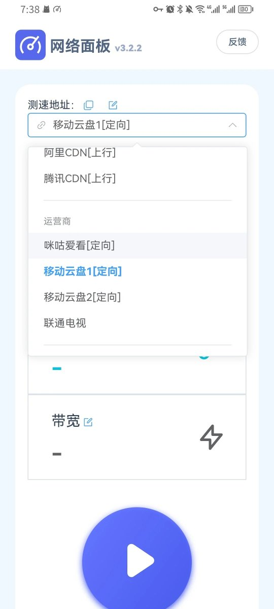
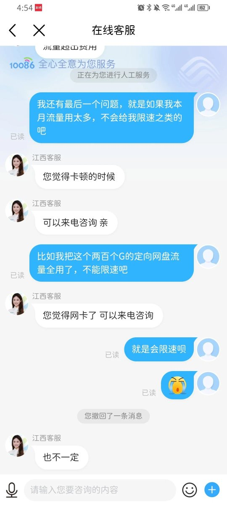

中国移动的流量活动是不是有点？用多少得多少我能理解，毕竟你们是既得利益者。
但为了推广自家网盘，引导用户刷流量是嫌自己资源太多？苹果的话好像有另一个名字，不叫移动云盘，好像是叫和彩云。
以江西移动APP搜的“无敌爽翻”为例，需要爱家豆切换档位，档位从1G到150G不等，建议刷100G就够。因为问了客服，每个月流量用到200G会限速。
嫌麻烦可以直接用net[.]netart[.]cn开刷，刷之前别忘了选定向先跑个100MB或者再少一点，虽然可以设置跑多少、但还会多漏一点？去年ATT医疗卡就是被广州一傻逼跑死的，一周跑了40多T的漫游流量（x
至于移动的豆子有啥用，以及领爱家豆的入口，可以到移动APP的超市里看到。有一个20元买会员的套餐可以领1000豆，有想拉满的可自行研究，豆子也可以换京东e卡、也跟联通一样有脚本，奶昔论坛上也有不少大佬提及过，就不展开说了（除非你们有兴趣
但为了推广自家网盘，引导用户刷流量是嫌自己资源太多？苹果的话好像有另一个名字，不叫移动云盘，好像是叫和彩云。
以江西移动APP搜的“无敌爽翻”为例，需要爱家豆切换档位，档位从1G到150G不等，建议刷100G就够。因为问了客服，每个月流量用到200G会限速。
嫌麻烦可以直接用net[.]netart[.]cn开刷，刷之前别忘了选定向先跑个100MB或者再少一点，虽然可以设置跑多少、但还会多漏一点？去年ATT医疗卡就是被广州一傻逼跑死的，一周跑了40多T的漫游流量（x
至于移动的豆子有啥用，以及领爱家豆的入口，可以到移动APP的超市里看到。有一个20元买会员的套餐可以领1000豆，有想拉满的可自行研究，豆子也可以换京东e卡、也跟联通一样有脚本，奶昔论坛上也有不少大佬提及过，就不展开说了（除非你们有兴趣

